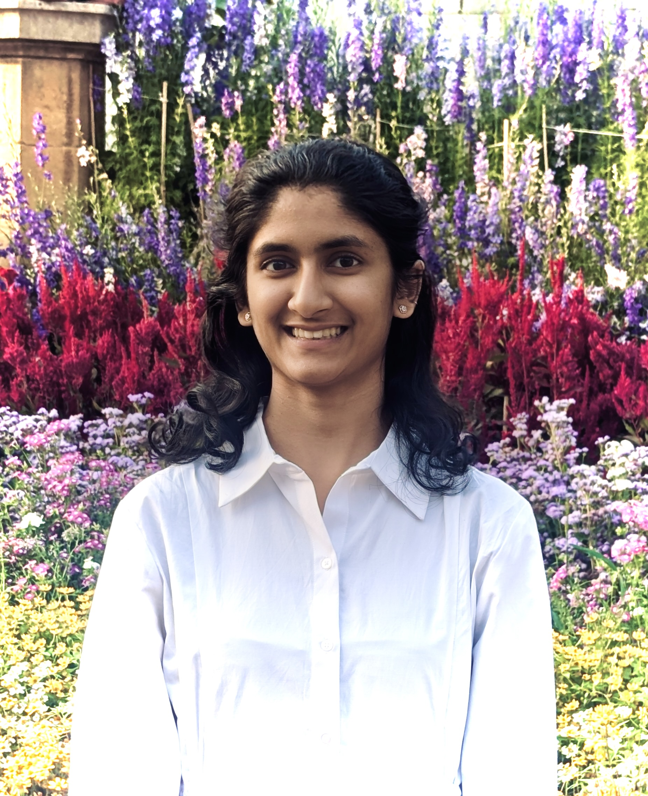

Palak Raisinghani
पलक रायसिंघानी | পলক রায়সিংঘানী
B.Tech in Mathematics and Computing,
Indian Institute of Science, Bangalore
Brief Bio
I am currenly in junior year pursuing my B.Tech in Mathematics and Computing at the Indian Institute of Science, Bangalore and will graduate in 2028. Before this I spent 19 years in Pune, where I completed my schooling.
Interests
I am interested in system architecture, system security and high performance computing and optimization of popular algorithms on different hardware. I like having an absolutely clear mental model of the system I am working with and aim to achieve it to the best of my capacity. I have liked topics that I have encountered in in Theoretical Computer Science (TCS), namely cryptography, automata and computability and DSA. I would like to explore more concepts and topics in TCS through course work and self study. I am inclined to research in the future and am looking forward to valuable research opportunities in industry and academia across the globe.
Work
I was introduced to research at IISc. Ever since I have had the opportunity of being in two research projects both from which I have learnt a lot. I serve as a core member of Databased the Undergraduate Computer science crew at IISc. Please check out my Experience page for further details on my journey so far.
Beyond Work
Beyond my prjects and academic and industrial pursuits, I have a lot of hobbies and have great interest in philosophy. I anjoy abstract art in acrylic and water-colour media. I am into Rabindra Sangeet and enjoy musical classics in several languages including English. I have learnt Kathak for 6 years from the Benaras and Jaipur shools while I was in Pune and am now learning Kuchipudi in Bangalore. I have been an athlete since day ZERO and a basketball player ever since I hit teenage. I enjoy several other sports like table tennis, fooseball, volleyball, badminton. I can cycle approximately 50 metres with my hands off the handles. I can ride cars- sedan and SUV but only automatic. I can also waveboard. I enjoy philosophical discussions and observations on how hard it can be to apply their teachings in life. Don't get me wrong by comparing the sizes of the last two sections. I am a hard and dedicated individual with great capacity to work hour on anything I am passionate about. I believe in quality over quantity so dive into any of my work and I will follow right along.
Awards and Achievements
Academic
- Recipient of Kotak Mahindra UG Scholarship (2024 - 2028)
- JEE Advanced - AIR 1461, JEE Mains - CRL 3242 (2024)
- Dr. Homi Bhabha Balvaidnyanik Competition - State level Silver (2018)
- Vidya Valley School, Pune - Best All-Rounder Award (2017)
Extra curricular
- Dance Bal Gandhavrva Tilak Examinations in Kathak (6 years in Jaipur and Benaras Gharana)
- Madhyama Pratham (stage 3), Praveshika Poorna (stage 2), Praveshika Pratham (stage 1)
- Sports
- ICSE State Athletic Meet - 2 Bronze medals (2018 & 2020)
- Played in the Basketball School Team for 4 years (2016 - 2019)
-
Art
- Intermediate and Elementary Art Exam